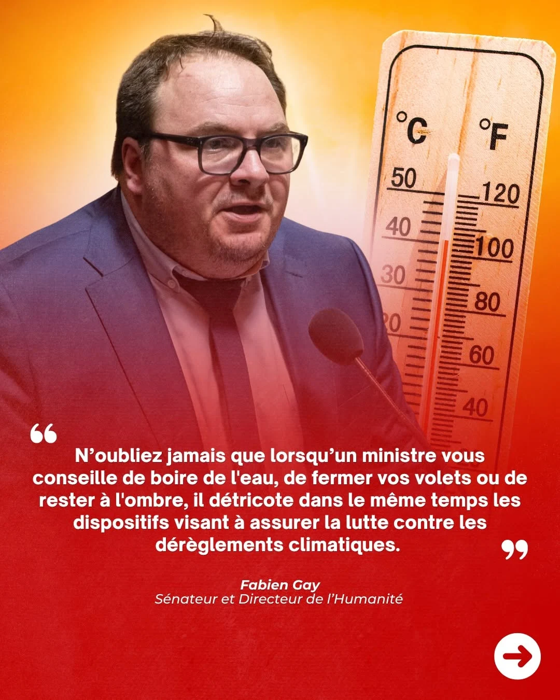
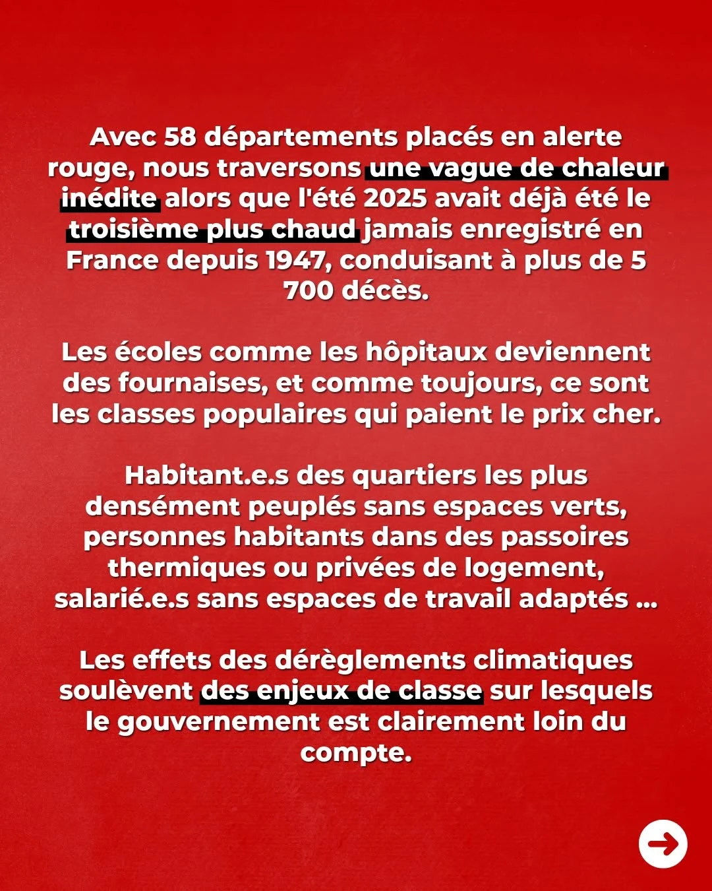
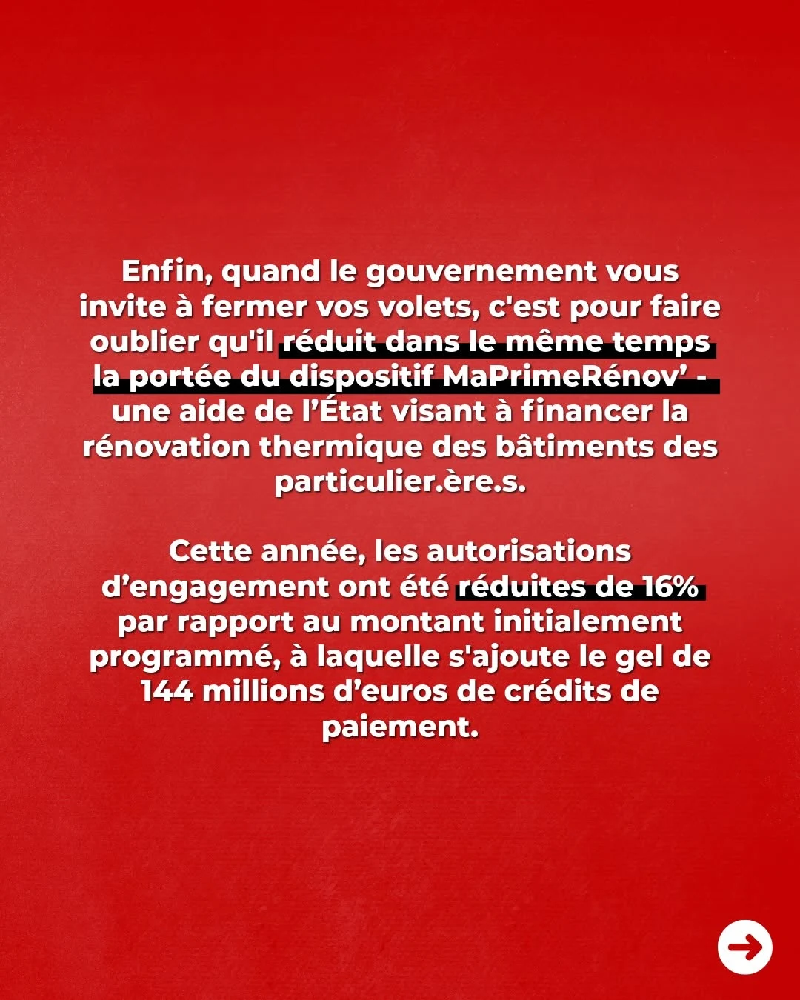
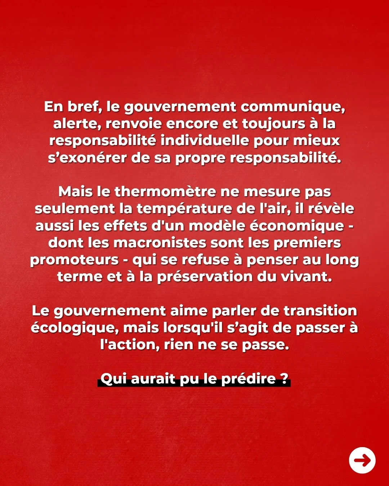
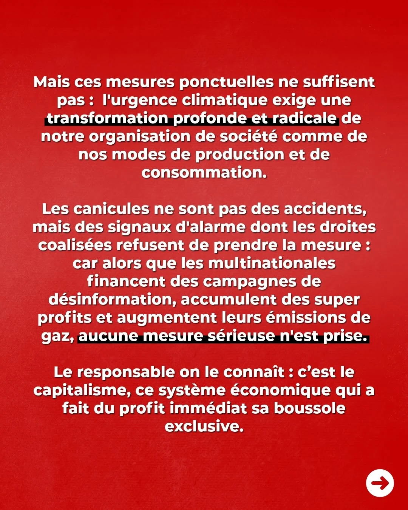
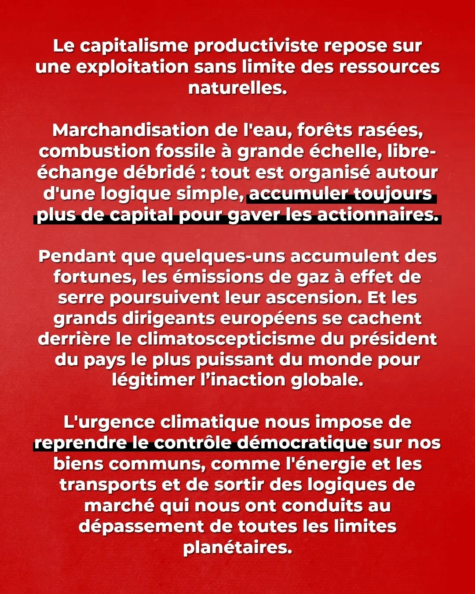

Prise de position relayée
Canicule. Fabien Gay alerte sur le recul des moyens publics
Date de mise à jour indiquée par Facebook · 25 juin 2026
Repères éditoriaux
Nous avons relayé l’alerte de Fabien Gay sur la canicule. Le 24 juin, le sénateur communiste a rappelé ce que les fortes chaleurs font subir aux habitantes et habitants des quartiers mal isolés et aux salariés exposés.
Il met en cause la baisse des moyens du Fonds vert et de MaPrimeRénov’ ainsi que le projet de réorganisation de l’ADEME. Il demande au gouvernement de renforcer les moyens publics qui permettent aux collectivités d’agir et aux ménages de rénover leur logement.
Texte conservé avec la publication






Sources
Archive rouge · source conservée dans l’export Facebook · AR-0002-FB-00747
À lire aussi · Canicule. Ian Brossat propose une réquisition climatique